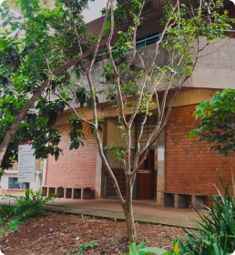
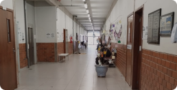
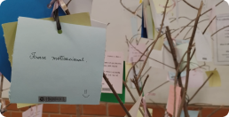

O Departamento de Informática da UEM é referência em ensino, pesquisa e inovação tecnológica. Com uma estrutura moderna e professores qualificados, oferecemos cursos de graduação e pós-graduação que preparam os alunos para os desafios do mercado de trabalho e do desenvolvimento científico. Aqui, você encontrará um ambiente colaborativo, projetos desafiadores e oportunidades de crescimento em diversas áreas da tecnologia da informação. Seja parte da nossa história e ajude a construir o futuro!


